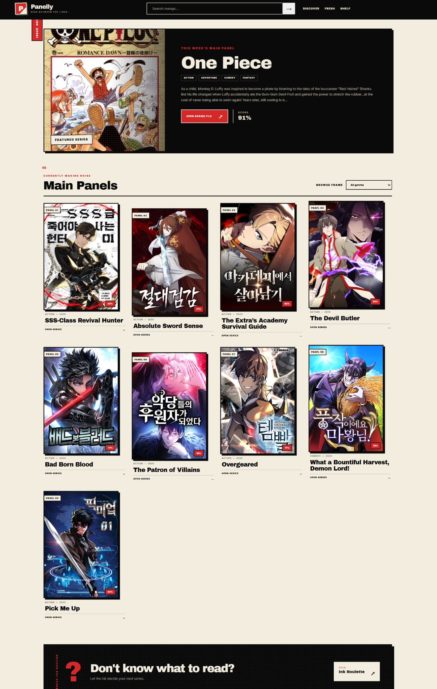
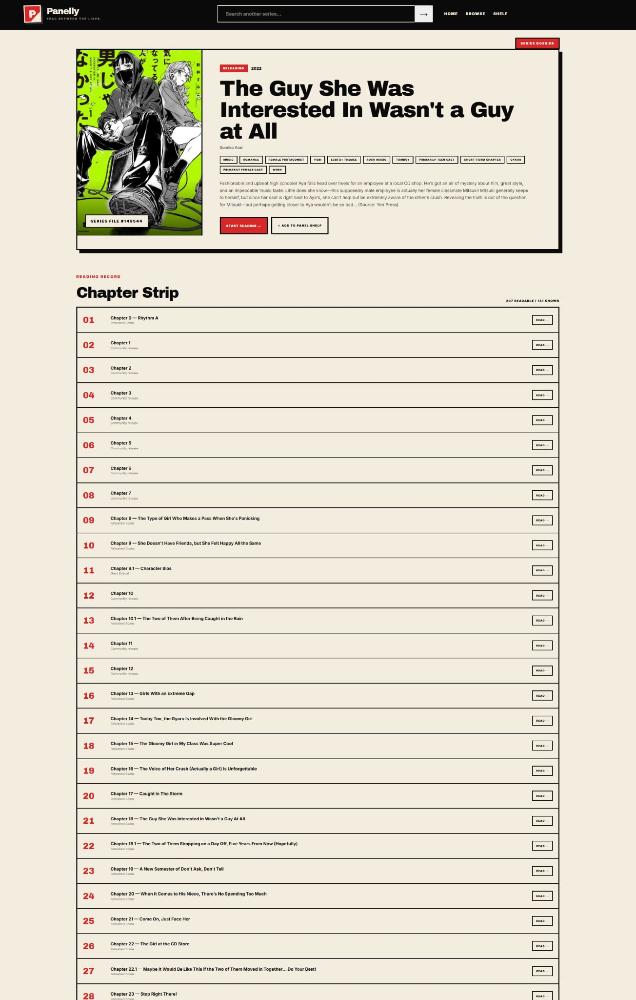
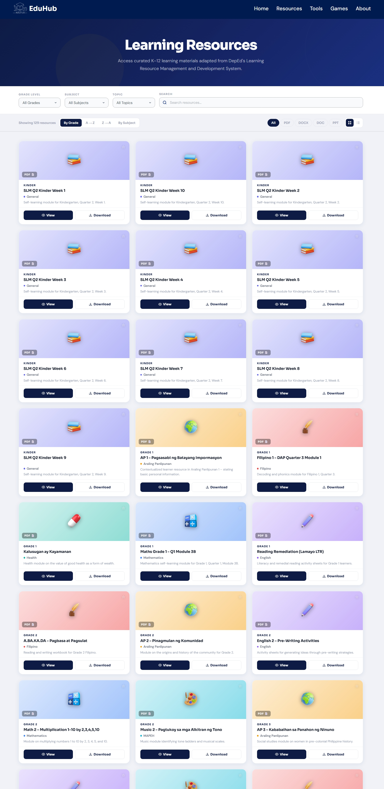
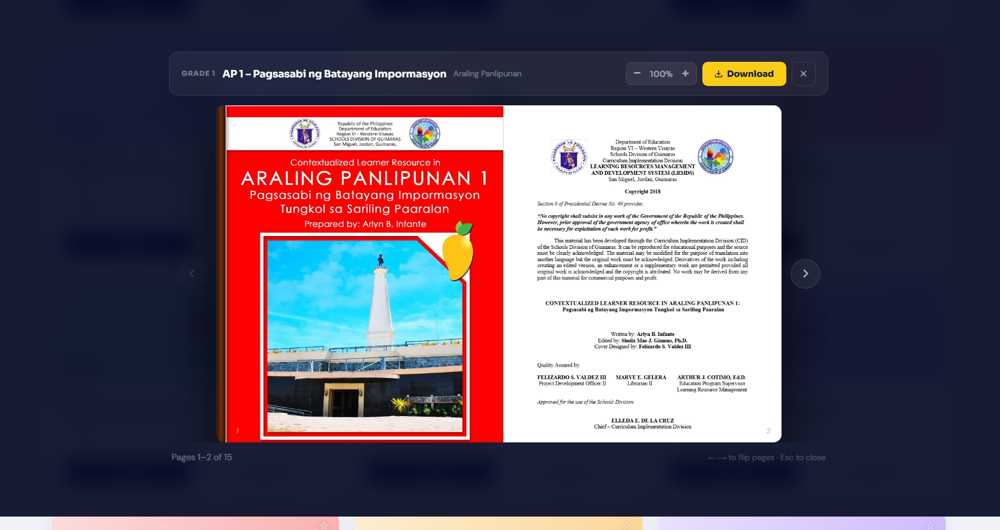
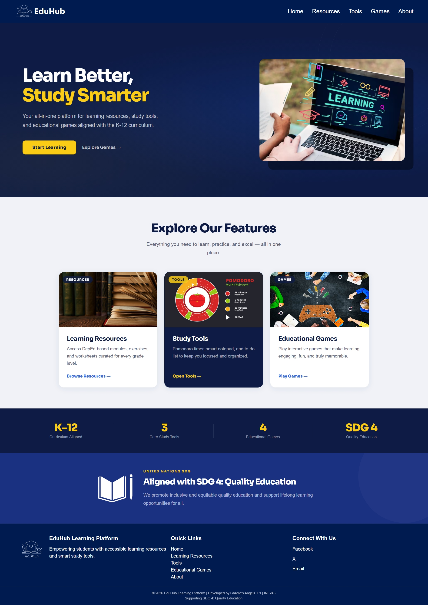

Frontend
HTML, CSS, JavaScript, responsive interfaces, DOM, Fetch, JSON, and Local Storage.
Developer / QA / Creative
Web products, QA work, network labs, and visual post-production — collected as project files instead of a normal portfolio grid.
Case files
Each project gets its own visual treatment based on what I actually worked on.
Web / API product
A manga discovery and reading interface built with vanilla JavaScript, external APIs, bookmarks, and reading progress.


Interview practice
An interview-practice application with role-aware questions, typed answers, speech transcription, timing, and session review.
Frontend contribution / QA
A K–12 educational platform. My contribution went beyond QA: I built the Learning Resources experience and resource viewer shown here.



Networking / WAN
Router-to-router WAN configuration using PPP, IPv4 addressing, static routing, and connectivity verification.

Film / Post-production
Short-film post-production covering the main edit, promotional cuts, color work, audio cleanup, transitions, and titles.
EDITOR / LEX
I like work that has something to solve — a screen to build, a bug to catch, a network to connect, or a story to shape.
I’m Lex, a BSIT student building across frontend development, QA, networking, and post-production.
HTML, CSS, JavaScript, responsive interfaces, DOM, Fetch, JSON, and Local Storage.
Functional testing, bug checking, validation, usability review, and fix verification.
IPv4, routing, WAN links, PPP, connectivity testing, and Packet Tracer.
Editing, color, audio cleanup, pacing, transitions, titles, and DaVinci Resolve.
More projects will be added as they are finished. GitHub currently has the code behind my web work.
Portfolio email will be added before publishing.